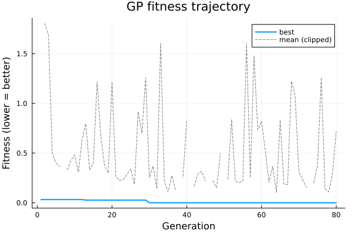
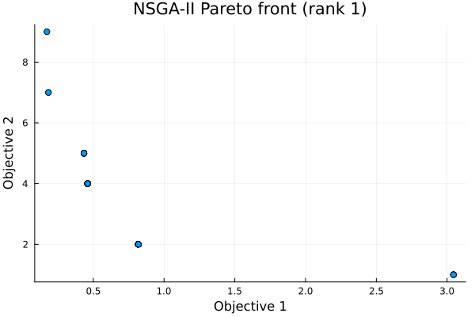
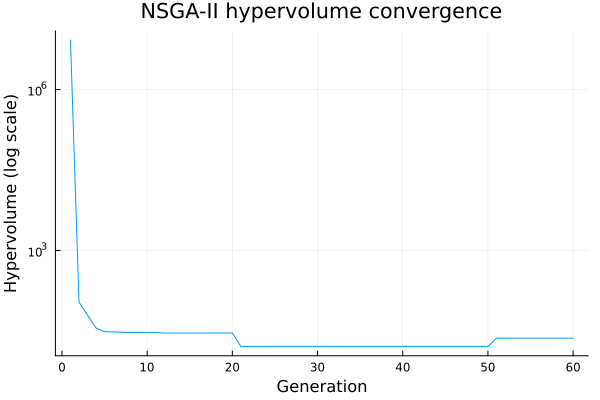
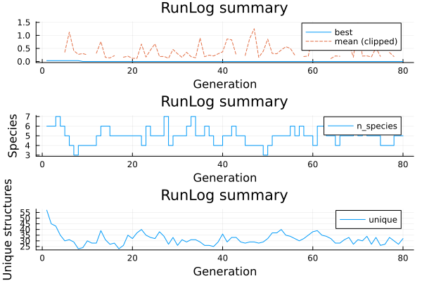
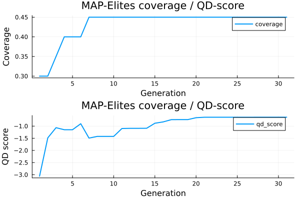
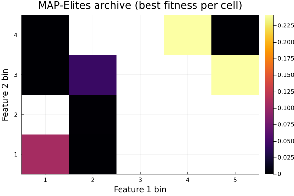

Plotting Results
Arborist.jl ships a weakdep extension (ext/ArboristRecipesBaseExt.jl) that registers Plots.jl recipes for the main result types. The extension loads automatically when both Arborist and any RecipesBase consumer (Plots.jl, Makie, etc.) are imported — no explicit opt-in required.
using Plots
using ArboristZero runtime cost when Plots is not loaded.
The plots on this page are rendered at documentation build time, so they reflect the actual recipe output for the indicated runs. The runs are deliberately small (low pop / few generations) to keep build time modest; in practice you would supply full-strength settings for the trajectories to be smooth.
Fitness trajectory: plot(::GPResult)
using Plots
using Arborist, DynamicExpressions
evaluator = SymbolicRegressionEvaluator(x -> x^2 + x,
domain=(-1f0, 1f0), points=20)
result = solve(GPProblem(evaluator, TreeGenome{Float32}; seed=42),
GeneticProgramming(pop_size=60, generations=80))
plot(result)
Draws a two-line chart: the best fitness per generation (bottom envelope) and the population-mean fitness per generation (upper line). The mean is clipped at median + 10·MAD so a rare pathological-genome generation (Float32 protected arithmetic can produce very large but finite means) does not dominate the y-axis; clipped points appear as a gap rather than a spike. Both series come from result.fitness_history and result.mean_history.
Pareto front: plot(::NSGAIIResult)
For two-objective problems:
using Plots
using Arborist, DynamicExpressions
inner = SymbolicRegressionEvaluator(x -> x^2 + x,
domain=(-2f0, 2f0), points=30)
evaluator = ParsimonyEvaluator(inner)
result = solve(GPProblem(evaluator, TreeGenome{Float32}; seed=42),
NSGAII(pop_size=120, generations=60))
plot(result)
Draws a scatter plot of the Pareto front. For three-objective problems the recipe emits a 3D scatter; for ≥ 4 objectives the plot falls back to a parallel-coordinates style view.
Hypervolume trajectory: plothypervolumetrajectory
plothypervolumetrajectory(result)
Per-generation hypervolume from result.hypervolume_history (2D objective problems only; 3+ objective problems record 0.0 and the plot is flat). The y-axis defaults to log scale because the hypervolume can span several orders of magnitude as the reference point shrinks during the early generations; pass yscale=:identity to see the linear view.
Structured run log: plot(::RunLog)
using Plots
using Arborist, DynamicExpressions
evaluator = SymbolicRegressionEvaluator(x -> x^2 + x,
domain=(-1f0, 1f0), points=20)
problem = GPProblem(evaluator, TreeGenome{Float32}; seed=42)
algorithm = GeneticProgramming(
pop_size = 60,
generations = 80,
speciation = ThresholdSpeciation(threshold=2.0),
)
log = RunLog()
solve(problem, algorithm; log = log)
plot(log)
Renders three subplots: fitness trajectory (best / mean — the recipe clips mean values above median + 10·MAD so a single pathological genome's huge fitness does not dominate the y-axis), species count over time, and unique structure count (a hash-based diversity proxy). With NoSpeciation (the default), the species panel is a flat line at 1.
MAP-Elites archive: plot(::MAPElitesResult) and plotarchive
using Plots
using Arborist, DynamicExpressions
ops = OperatorEnum(binary_operators=[+, -, *], unary_operators=[])
xs = collect(Float32, -1.0:0.1:1.0)
X = reshape(xs, 1, :)
y = xs .* xs # target: y = x^2
evaluator = TreeFitnessEvaluator(X, y, ops)
problem = GPProblem(evaluator, TreeGenome{Float32}; seed=42)
# Feature grid: (tree size, tree depth)
fp_fn = g -> (Float64(complexity(g)), Float64(tree_depth(g)))
algorithm = MAPElites(
feature_fn = fp_fn,
feature_bounds = [(1.0, 15.0), (0.0, 6.0)],
n_bins = [5, 4],
mutation_ops = [SubtreeMutation(), PointMutation()],
crossover_ops = [SubtreeCrossover()],
generations = 30,
batch_size = 25,
n_init = 40,
crossover_rate = 0.4,
parallel = false,
)
result = solve(problem, algorithm)
# Coverage + QD-score history as two subplots:
plot(result)
# The final archive state (bin fitness as a heatmap):
plotarchive(result.archive)
Saving figures
All recipes return a Plots.Plot object — use the standard Plots API:
p = plot(result)
savefig(p, "run_fitness.pdf")
savefig(p, "run_fitness.png")Or specify the backend up front:
using Plots
pyplot() # Matplotlib backend, for publication figures
plot(result)Custom plots
When a recipe doesn't cover the specific view you want, every result type exposes the underlying data directly:
result.fitness_history::Vector{Float64}— best per generation.result.mean_history::Vector{Float64}— population mean per generation.result.pareto_fitnesses::Vector{Vector{Float64}}— Pareto front objective vectors (NSGA-II).result.hypervolume_history::Vector{Float64}— per-generation HV.log.entries::Vector{GenerationLog}— full structured log fromsolve(...; log=RunLog()), one entry per generation, containing operator-attempted / operator-success dicts, species sizes, structural diversity, and wall time.